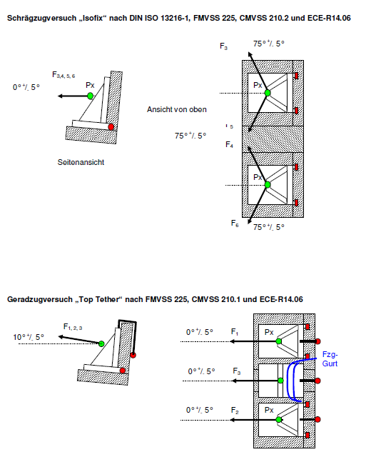

Lastenheft
Gurtzug
Änderungsdokumentation
| Änderungs-stand | Beschreibung der Änderung | Ersteller |
|---|---|---|
| [redacted-person] | Erstfassung nach Reorganisation | Bertrandt |
| [redacted-person] | Aktualisierung für Status E | [redacted-person] |
Allgemeines 4
Lastfälle 4
Gurtzug 4
Kindersitzverankerungspunkte 4
[redacted-person] und Durchführung 7
Anforderungen 8
[redacted-person] 8
Gurtzug 8
Kindersitzverankerungen 9
[redacted-person] 9
[redacted-person] 9
Anhang
Allgemein gültige Abkürzungen
3.10.1 Allgemeines
Alle allgemein gültigen Richtlinien sind in den allgemeinen Lastenheften „1_2_Allgemeines_Lastenheft_Vernetzung_und_Modellerstellung“ und „2_1_LAH_Crash_ Modellaufbau_allgemein“ beschrieben.
[redacted-person] dient als lastfallbezogene Konfiguration bzw. als Ergänzung zu den allgemeinen Lastenheften und ist nur in Verbindung mit diesen gültig.
3.10.2 Lastfälle
3.10.2.1
Gurtzug
Gesetze sind ähnlich und unterscheiden sich nur in der Haltezeit (vier Gesetze werden zu einem Lastfall zusammengefasst, da der Einfluss der Haltezeit nicht berücksichtigt wird - statischer Lastfall).
Gurtkraft vorder- und Hintersitze Gesetzt / [redacted-co] (+20%) |
Kraftanstiesgzeit | Haltezeit | Zusatzmasse für [redacted-person] | |
|---|---|---|---|---|
| ECE-R14 | 13.5kN / 16.2kN | 1s | 0.2s | 20-fache Sitz- / Lehnenmasse* |
| FMVSS 210 | 13.5kN / 16.2kN | 1s | 10s | 20-fache Sitz- / Lehnenmasse* |
| ADR 5 | 13.5kN / 16.2kN | 1s | 1s | 20-fache Sitz- / Lehnenmasse* |
| TRIAS 37 | 13.5kN / 16.2kN | 1s | 0.2s | 20-fache Sitz- / Lehnenmasse* |
* Nur an den Sitzen/Lehnen, woran das Gurtsystem befestigt ist, soll mit der 20-fachen
Sitz/Lehnenmasse gezogen werden.
Kindersitzverankerungspunkte
| Gesetz/Norm | [redacted](+20%) | Max. Vorverlagerung in Zugrichtung | Feldrelevanz |
|---|---|---|---|
| FMVSS 225 | |||
Isofix Geradzug 0° |
11kN / 13,2kN untere Kindersitzverankerungen |
175mm | 10°+-5° zur Horizontalen |
Isofix Schrägzug +-75° |
5kN / 6kN untere Kindersitzverankerungen |
150mm | 0°+-5° zur Horizontalen |
Isofix, [redacted-person], Latch. Geradzug 0° |
15kN / 18kN obere +untere Kindersitzverankerungen |
- | 10°+-5° zur Horizontalen |
| CMVSS 210.1 | |||
Isofix , [redacted-person] Geradzug 0° |
10kN / 12kN obere + untere Kindersitzverankerungen |
- | 10°+-5° zur Horizontalen |
| CMVSS 210.2 | |||
Isofix , [redacted-person] Geradzug 0° |
15kN / 18kN untere und ggf. obere Kindersitzverankerungen |
- | 10°+-5° zur Horizontalen |
Isofix , [redacted-person] Schrägzug 75° |
5kN / 6kN untere und ggf. obere Kindersitzverankerungen |
- | 0°+-20° zur Horizontalen |
| ISO 13216 | |||
Isofix Geradzug 0° |
8kN / 9,6kN untere Kindersitzverankerungen |
125mm | 10°+-5° zur Horizontalen |
Isofix Schrägzug +-75° |
5kN / 6kN untere Kindersitzverankerungen |
125mm | 0°+-5° zur Horizontalen |
Isofix, [redacted-person], Latch. Geradzug 0° |
8kN / 9,6kN obere + untere Kindersitzverankerungen |
- | 10°+-5° zur Horizontalen |
| ECE-R14 | |||
Isofix Geradzug 0° |
8kN / 9,6kN untere Kindersitzverankerungen |
125mm | 10°+-5° zur Horizontalen |
Isofix Schrägzug +-75° |
5kN / 6kN untere Kindersitzverankerungen |
125mm | 0°+-5° zur Horizontalen |
Isofix, [redacted-person], Latch. Geradzug 0° |
8kN / 9,6kN obere + untere Kindersitzverankerungen |
125mm | 10°+-5° zur Horizontalen |
| ADR 34 | |||
[redacted-person] Geradzug 0° |
3,4kN/4,1kN obere Haltegurtverankerungen |
- |
|


Die ECE-R14.06 ist ohne mittleren Sitzplatz zu prüfen.
[redacted-person] und Durchführung
[redacted-person] besteht aus einer Karosse mit Sitzen und Gurtsystemen.
[redacted-person] ist an ihren Achsanbindepunkten hinten und vorne gelagert, sowie an den Feder-Dämpferaufnahmen an der Karosserie.
Im Versuch wird mit Hilfe von Thorax- und Beckenprüfkörpern an den Sicherheitsgurten gezogen, die die Lasten in den Rohbau bzw. in Sitz und Rohbau einleiten. Gleichzeitig und abhängig von den Gurtschlossanbindepunkten bzw. Gurtautomatlagen, wird die 20-fache Lehnenmasse in das Lehnensystem eingeleitet.
Die 20-fache Sitz- bzw. Lehnenmasse ist nur einzuleiten, wenn irgendeiner der Gurtankerpunkte an der Sitzstruktur bzw. Lehne angebracht ist (z.[redacted-person] klappbarer Lehne ist der Gurtautomat in der Lehne angebracht). [redacted-person] wird im Schwerpunkt des [redacted-person]/Sitz-Lehne eingebracht.
Die 20-fache Sitz/Lehnenmasse wird von der [redacted-co] Sachbearbeitern vorgegeben.
[redacted-person] sind für die Körperblöcke 10° und für die 20-fache Sitz/Lehnenmassen 0°.
Bei einem Versuch werden alle Anbindepunkte einer Sitzreihe abgeprüft.
[redacted-person] und Gurthöhenverstellungen werden in den Lastfall abgeprüft:
Verfügt der Sitz nicht über eine Höhenverstellung, sind nur die verschiedenen Längspositionen zu testen:
|
|||||||||||||||||||||||||||||||||||||||
Anforderungen
Zielvorgaben / Grenzwerte / Anforderungen sind den Lastenheft der Fahrzeugsicherheit (Gurtverankerung LAH [redacted-phone]B) zu entnehmen sowie der [redacted-person] Fahrzeugsicherheit (LAH [redacted-phone]J).
[redacted-person] soll abgeprüft werden, dass:
[redacted-person] der Zugkräfte während der Haltezeit stattfindet
[redacted-person] von Bauteilen zu erwarten ist
die maximal horizontale Lehnenvorverlagerung des R-Punkts jedes Sitzes unter 100mm bleibt
3.10.4
[redacted-person]
FE-Modelle im Pamcrash-Format für Hauptdeck und Includes sind nach den Richtlinien des 1_2_Allgemeines_Lastenheft_Vernetzung_und_Modellerstellung (Änderungsstand [redacted-phone]) zu erstellen.
[redacted-person] ist aus der Crashdisziplin (z.[redacted-person]) zur verwenden und kann von der [redacted-person] Karosserie ([redacted-person]) übernommen werden.
Für die Sitzanlagen/Gurtsysteme sind, wenn vorhanden, die Modelle von der [redacted-person] Interieur ([redacted-person]) zur verwenden.
In einem ersten Schritt kann die Abbildung einer Gurtverankerung, so wie im Modell einer Crashdisziplin abgebildet, übernommen werden ("grobe" Modellierung im Crashmodell - [redacted-person] ca. 5-10 mm). Dadurch kann ein Überblick über die Hauptdeformation in dem Bereich verschafft werden.
Um mehr Genauigkeit bzgl. Versagen und Stabilität der Verankerung zu gewinnen, ist im Bereich der Gurtverankerungen eine Modellverfeinerung notwendig.
Alle relevanten Komponenten/Bauteile der Befestigung/Verankerung sind abzubilden und zwar nach [redacted-person] (Bleche und Gussteile), Verstärkungen und Haltewinkeln für Sitze und Gurte, Löcher, Bolzen/Schrauben/Nietmüttern, Unterlegscheiben, ... .
[redacted-person] zu Modellierung und Zusammenbau einiger dieser Komponenten im Fahrzeug, stehen die „Minimodelle“ für Sitz- und Gurtverankerungen in den [redacted-person] und Frontcrash zur Verfügung und sind hierbei zu berücksichtigen.
[redacted-person] bzw. Beschreibung der Umfänge ist in der Doku 3_10_LAH_Gurtzug__2014_04_03_Minimodelle_für_Gurtzug_und_Frontcrash.pptx
zu finden.
Hierfür ist die Abbildung der "Kontakt und Wandstärke"-Situation der einzelnen Komponenten sehr wichtig, so dass der zusammengebaute Zustand aller relevanten Komponenten und Bauteile kompakt (realitätsnah) und ohne Spiel bleibt.
[redacted-person] darf bei einer solchen Modellierungsart (in den relevanten Bereichen) bis zu 2-3 mm betragen.
[redacted-person] und Definition der FE-Parameter für Pamcrash ist aus den Minimodellen zu entnehmen ggf. mit der [redacted-person] Karosserie abzustimmen.
Abweichend vom [redacted-person], das für alle Crashdisziplinen gilt und im 2_1_LAH_Crash_Modellaufbau_allgemein beschrieben ist, sind für diesen Lastfall folgende Erweiterungen/Anpassungen im Modell notwendig:
3.10.4.1 G
urtzug
Header (RUNEND)
CNTAC (Bodyblocks, Sitze, Karosserie, Gurte, Verriegelungsbolzen, Schienen)
ACFLD (Beschleunigungsfeld)
Sitzmodelle (werden von der Fachabteilung ([redacted-person]) zur Verfügung gestellt)
Gurtsysteme (werden von der Fachabteilung ([redacted-person]) zur Verfügung gestellt)
Zugkörper (Thorax und Becken) (werden von der Fachabteilung (EK-14x)zur Verfügung gestellt)
3.10.4.2
Kindersitzverankerungen
Basismodelle wie Gurtzug mit Änderung der
Sitzmodelle (werden von der Fachabteilung zur Verfügung gestellt)
[redacted-person] Haken
Gurtsysteme (werden von der Fachabteilung zur Verfügung gestellt)
Zugkörper (Thorax und Becken)-(werden von der Fachabteilung zur Verfügung gestellt)
Gurtankerpunkte sollen dem Projektstand bzw. CAD-Fahrzeugstand entsprechen (oder, wenn noch nicht vorhanden, aus FE-Vorgängermodellen übernommen werden).
[redacted-person], Top-[redacted-person] und Körperblöcke werden in der Regel von der Fachabteilung zur Verfügung gestellt (evtl. auch von der [redacted]).
Wenn das Modell neu aufzubauen ist, sollen die Körperblöcke über Pre-Prozessor und Pre-Simulation mit geringer Zugkraft (<1 kN) auf die richtige Ausgangslage im Fahrzeug positioniert werden.
[redacted-person] wird zum Zeitpunkt des Modellaufbaus für Gurtzugsimulation in Form von Koordinaten/Lage im Fahrzeug zur Verfügung gestellt.
3.10.5 [redacted-person]
Außer den für CAE-Bench festgelegten Standardauswertedefinitionen in der Karosserie, sollen folgende Ausgabegrößen aus dem Gurtzugmodell mit dokumentiert werden:
- Kräfte in den "Zugbars" aus allen Prüfkörpern
- Kraftverteilung über die Gurtenden
- Krafteinleitung in die Karosserie (Größe und Richtung)
- Krafteinleitung in den Sitzen (Größe und Richtung)
- Kraftverläufe über die Gurtumlenker in die Karosserie (Größe und Richtung)
- Lokale und globale Deformationen der Karosserie und Strukturbauteilen (Dehnungen)
- Belastung der Verbindungstechnik (Prognose für Versagen über Zug- und Schubkräfte)
- Vorverlagerung der Sitzanlagen (Sitz und Lehne – R-[redacted-person])
- auffällige Problemstellen ermitteln und dokumentieren.
[redacted-person]/Prognose des Versagens der Verbindungstechnik werden die aktuellen Auswerte-Tools bei [redacted-co] (zum [redacted]PAM.EL.A, Trefftz, -BM3-) verwendet.
[redacted-person] aus der Simulationen werden mit der Fachabteilung besprochen; dabei wird geklärt, ob im Einzelnen bestimmte Auswertungsziele berichtet werden oder zur Fahrzeugsicherheit weitergeleitet werden sollen.
3.10.6 [redacted-person]
[redacted-person] erfolgt nach den im allgemeinen Crashlastenheft beschriebenen Richtlinien.
Eine ausführliche Dokumentation bzgl. der Punkte unter 3.10.5 ist der Fachabteilung zur Verfügung zu stellen sowie die Ergebnisse aus der Simulation.
[redacted-person] aus der Simulation werden in CAE-Bench abgelegt und freigeschaltet.
Allgemein gültige Abkürzungen
| ADR | [redacted-person] Rule |
|---|---|
| AK-LV | Arbeitskreis – Lieferbedingung (vom AK Airbagkomponenten) |
| AK-ZV | Arbeitskreis – Zielvereinbarung (vom AK Airbagkomponenten) |
| AÖ | Ausströmöffnung (im Luftsack) |
| AV | Arbeitsanweisung |
| BAM | Bundesanstalt für Materialprüfung |
| BF | Beifahrer |
| CMVSS | [redacted]Standard |
| COP | [redacted-person] Part |
| DMU | [redacted-person] up |
| DOT/HS | Department of Transportation/[redacted-person] |
| ECE R | [redacted-person] for [redacted-person] |
| F | Fahrer |
| FEM | [redacted-person] Methode |
| FFC | [redacted-person] Criterion |
| FMEA | Failure mode and effects analysis (Fehler-Möglichkeits- und Einfluß-Analyse) |
| FMVSS | [redacted]Standards |
| HIC | [redacted-person] Criterion |
| HS | High-Speed |
| HSK | Handschuhkasten |
| HT | Hochtemperatur |
| KF | Kniefänger |
| KD | Kundendienst |
| LAH | Lastenheft |
| LL | Linkslenker |
| LS | Luftsack |
| NAR/USA | [redacted-person] |
| NCAP | [redacted] |
| NIC | [redacted-person] Criterion |
| NT | Niedrigtemperatur |
| ODB | Offset gegen deformierbare Barriere |
| OGG | Gasgenerator, geladen auf die obere Grenze des Kennfeldes |
| OOP | Out Of Position |
| PDM | [redacted-person] Montageanleitung |
| PGP | [redacted-person] Privacy (Software zur sicheren Übertragung von E-Mails) |
| PV | Prüfvorschrift |
| PVS | Produktionsversuchsserie |
| RdW | Rest der Welt |
| RL | Rechtslenker |
| RT | Raumtemperatur |
| TCC | [redacted-person] Criterion |
| TCFC | [redacted] |
| TI | [redacted-person] |
| TL | [redacted-person] |
| TLD | [redacted-person] für Dokumentationen |
| UGG | Gasgenerator, geladen auf die untere Grenze des Kennfeldes |
| UGG10m | Kannendruck abgestimmt auf den Wert bei t = 10 ms |
| USA/NAR | [redacted-person] |
| UWS | Umweltsimulations-Prüfung |
| VDA | Verband der Automobilindustrie |
| VC | [redacted-person] |
| ZSB | Zusammenbau |